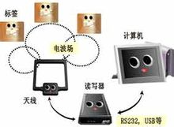
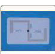

同义词
RFID一般指射频识别技术（通信技术术语）
射频识别技术，是20世纪80年代发展起来的一种新兴自动识别技术，射频识别技术是一项利用射频信号通过空间耦合（交变磁场或电磁场）实现无接触信息传递并通过所传递的信息达到识别目的的技术。
RFID backscatter.
中国通信学会
，
计算机术语
，
计算机学
射频识别，RFID（Radio Frequency Identification）技术，又称无线射频识别，是一种通信技术，可通过无线电讯号识别特定目标并读写相关数据，而无需识别系统与特定目标之间建立机械或光学接触。
射频的话，一般是微波，1-100GHz，适用于短距离识别通信。
RFID读写器也分移动式的和固定式的，目前RFID技术应用很广，如：图书馆，门禁系统，食品安全溯源等。
- 中文名
- 射频识别
- 外文名
- Radio Frequency IDentification
- 常用频段
- 低频、高频、超高频
- 常见应用
- 门禁系统，食品安全溯源
- 简 称
- RFID
目录
射频识别技术背景
射频标签是产品电子代码（EPC）的物理载体，附着于可跟踪的物品上，可全球流通 并对其进行识别和读写。RFID（Radio Frequency Identification）技术作为构建“物联网” 的关键技术近年来受到人们的关注。RFID 技术早起源于英国，应用于第二次世界大战中辨别敌我飞机身份，20 世纪 60 年代开始商用。RFID 技术 是一种自动识别技术，美国国防部规定 2005 年 1 月 1 日以后，所有军需物资都要使用 RFID 标签；美国食品与药品管理局（FDA）建议制药商从 2006 年起利用 RFID 跟踪常 造假的药品。Walmart，Metro 零售业应用 RFID 技术等一系列行动更是推动了 RFID 在全 世界的应用热潮。2000 年时，每个 RFID 标签的价格是 1 美元。许多研究者认为 RFID 标 签非常昂贵，只有降低成本才能大规模应用。2005 年时，每个 RFID 标签的价格是 12 美分 左右，现在超高频 RFID 的价格是 10 美分左右。RFID 要大规模应用，一方面是要降低 RFID 标签价格，另一方面要看应用 RFID 之后能否带来增值服务。欧盟统计办公室的统计数据表明，2010 年，欧盟有 3%的公司应用 RFID 技术，应用分布在身份证件和门禁控制、供应 链和库存跟踪、汽车收费、防盗、生产控制、资产管理。
射频识别技术定义
无线电的信号是通过调成无线电频率的电磁场，把数据从附着在物品上的标签上传送出去，以自动辨识与追踪该物品。某些标签在识别时从识别器发出的电磁场中就可以得到能量，并不需要电池；也有标签本身拥有电源，并可以主动发出无线电波（调成无线电频率的电磁场）。标签包含了电子存储的信息，数米之内都可以识别。与条形码不同的是，射频标签不需要处在识别器视线之内，也可以嵌入被追踪物体之内。
许多行业都运用了射频识别技术。将标签附着在一辆正在生产中的汽车，厂方便可以追踪此车在生产线上的进度。仓库可以追踪药品的所在。射频标签也可以附于牲畜与宠物上，方便对牲畜与宠物的积极识别（积极识别意思是防止数只牲畜使用同一个身份）。射频识别的身份识别卡可以使员工得以进入锁住的建筑部分，汽车上的射频应答器也可以用来征收收费路段与停车场的费用。
某些射频标签附在衣物、个人财物上，甚至于植入人体之内。由于这项技术可能会在未经本人许可的情况下读取个人信息，这项技术也会有侵犯个人隐私忧患。
射频识别技术概念
从概念上来讲，RFID类似于条码扫描，对于条码技术而言，它是将已编码的条形码附着于目标物并使用专用的扫描读写器利用光信号将信息由条形磁传送到扫描读写器；而RFID则使用专用的RFID读写器及专门的可附着于目标物的RFID标签，利用频率信号将信息由RFID标签传送至RFID读写器。
射频识别技术结构
从结构上讲RFID是一种简单的无线系统，只有两个基本器件，该系统用于控制、检测和跟踪物体。系统由一个询问器和很多应答器组成。
射频识别技术近况
最初在技术领域，应答器是指能够传输信息回复信息的电子模块，近些年，由于射频技术发展迅猛，应答器有了新的说法和含义，又被叫做智能标签或标签。RFID电子标签的阅读器通过天线与RFID电子标签进行无线通信，可以实现对标签识别码和内存数据的读出或写入操作。RFID技术可识别高速运动物体并可同时识别多个标签，操作快捷方便。
在未来，RFID技术的飞速发展对于物联网领域的进步具有重要的意义。
射频识别技术组成部分
应用软件系统 ：是应用层软件，主要是把收集的数据进一步处理，并为人们所使用。
射频识别技术特点
射频识别技术射频技术
射频识别系统最重要的优点是非接触识别，它能穿透雪、雾、冰、涂料、尘垢和条形码无法使用的恶劣环境阅读标签，并且阅读速度极快，大多数情况下不到100毫秒。有源式射频识别系统的速写能力也是重要的优点。可用于流程跟踪和维修跟踪等交互式业务。
制约射频识别系统发展的主要问题是不兼容的标准。射频识别系统的主要厂商提供的都是专用系统，导致不同的应用和不同的行业采用不同厂商的频率和协议标准，这种混乱和割据的状况已经制约了整个射频识别行业的增长。许多欧美组织正在着手解决这个问题，并已经取得了一些成绩。标准化必将刺激射频识别技术的大幅度发展和广泛应用。
射频识别技术适用性
物流管理的本质是通过对物流全过程的管理，实现降低成本和提高服务水平两个目的。如何以正确的成本和正确的条件，去保证正确的客户在正确的时间和正确的地点，得到正确的产品，成为物流企业追求的最高目标。一般来说，企业存货的价值要占企业资产总额的25%左右，占企业流动资产的50%以上。所以物流管理工作的核心就是对供应链中存货的管理。
在运输管理方面采用射频识别技术，只需要在货物的外包装上的安装电子标签，在运输检查站或中转站设置阅读器，就可以实现资产的可视化管理。与此同时，货主可以根据权限，访问在途可视化网页，了解货物的具体位置，这对提高物流企业的服务水平有着重要意义。
射频识别技术性能特点
1.快速扫描。RFID辨识器可同时辨识读取数个RFID标签！
2.体积小型化、形状多样化。RFID在读取上并不受尺寸大小与形状限制，不需为了读取精确度而配合纸张的固定尺寸和印刷品质。此外，RFID标签更可往小型化与多样形态发展，以应用于不同产品。
3.抗污染能力和耐久性。传统条形码的载体是纸张，因此容易受到污染，但RFID对水、油和化学药品等物质具有很强抵抗性。此外，由于条形码是附于塑料袋或外包装纸箱上，所以特别容易受到折损；RFID卷标是将数据存在芯片中，因此可以免受污损。
4.可重复使用。现今的条形码印刷上去之后就无法更改，RFID标签则可以重复地新增、修改、删除RFID卷标内储存的数据，方便信息的更新。
5.穿透性和无屏障阅读。在被覆盖的情况下，RFID能够穿透纸张、木材和塑料等非金属或非透明的材质，并能够进行穿透性通信。而条形码扫描机必须在近距离而且没有物体阻挡的情况下，才可以辨读条形码。
6.数据的记忆容量大。一维条形码的容量是50Bytes，二维条形码最大的容量可储存2至3000字符，RFID最大的容量则有数MegaBytes.随着记忆载体的发展，数据容量也有不断扩大的趋势。未来物品所需携带的资料量会越来越大，对卷标所能扩充容量的需求也相应增加。
7.安全性。由于RFID承载的是电子式信息，其数据内容可经由密码保护，使其内容不易被伪造及变造。
RFID因其所具备的远距离读取、高储存量等特性而备受瞩目。它不仅可以帮助一个企业大幅提高货物、信息管理的效率，还可以让销售企业和制造企业互联，从而更加准确地接收反馈信息，控制需求信息，优化整个供应链。
2.体积小型化、形状多样化。RFID在读取上并不受尺寸大小与形状限制，不需为了读取精确度而配合纸张的固定尺寸和印刷品质。此外，RFID标签更可往小型化与多样形态发展，以应用于不同产品。
3.抗污染能力和耐久性。传统条形码的载体是纸张，因此容易受到污染，但RFID对水、油和化学药品等物质具有很强抵抗性。此外，由于条形码是附于塑料袋或外包装纸箱上，所以特别容易受到折损；RFID卷标是将数据存在芯片中，因此可以免受污损。
4.可重复使用。现今的条形码印刷上去之后就无法更改，RFID标签则可以重复地新增、修改、删除RFID卷标内储存的数据，方便信息的更新。
5.穿透性和无屏障阅读。在被覆盖的情况下，RFID能够穿透纸张、木材和塑料等非金属或非透明的材质，并能够进行穿透性通信。而条形码扫描机必须在近距离而且没有物体阻挡的情况下，才可以辨读条形码。
6.数据的记忆容量大。一维条形码的容量是50Bytes，二维条形码最大的容量可储存2至3000字符，RFID最大的容量则有数MegaBytes.随着记忆载体的发展，数据容量也有不断扩大的趋势。未来物品所需携带的资料量会越来越大，对卷标所能扩充容量的需求也相应增加。
7.安全性。由于RFID承载的是电子式信息，其数据内容可经由密码保护，使其内容不易被伪造及变造。
RFID因其所具备的远距离读取、高储存量等特性而备受瞩目。它不仅可以帮助一个企业大幅提高货物、信息管理的效率，还可以让销售企业和制造企业互联，从而更加准确地接收反馈信息，控制需求信息，优化整个供应链。
射频识别技术工作原理
RFID技术的基本工作原理并不复杂：标签进入磁场后，接收解读器发出的射频信号，凭借感应电流所获得的能量发送出存储在芯片中的产品信息（无源标签或被动标签），或者由标签主动发送某一频率的信号（Active Tag，有源标签或主动标签），解读器读取信息并解码后，送至中央信息系统进行有关数据处理。
一套完整的RFID系统， 是由阅读器与电子标签也就是所谓的应答器及应用软件系统三个部份所组成，其工作原理是Reader发射一特定频率的无线电波能量，用以驱动电路将内部的数据送出，此时Reader便依序接收解读数据， 送给应用程序做相应的处理。
以RFID 卡片阅读器及电子标签之间的通讯及能量感应方式来看大致上可以分成：感应耦合及后向散射耦合两种。一般低频的RFID大都采用第一种式，而较高频大多采用第二种方式。
阅读器根据使用的结构和技术不同可以是读或读/写装置，是RFID系统信息控制和处理中心。阅读器通常由耦合模块、收发模块、控制模块和接口单元组成。阅读器和应答器之间一般采用半双工通信方式进行信息交换，同时阅读器通过耦合给无源应答器提供能量和时序。在实际应用中，可进一步通过Ethernet或WLAN等实现对物体识别信息的采集、处理及远程传送等管理功能。应答器是RFID系统的信息载体，应答器大多是由耦合原件（线圈、微带天线等）和微芯片组成无源单元。
射频识别技术产品分类
RFID技术中所衍生的产品大概有三大类：无源RFID产品、有源RFID产品、半有源RFID产品。
无源RFID产品发展最早，也是发展最成熟，市场应用最广的产品。比如，公交卡、食堂餐卡、银行卡、宾馆门禁卡、二代身份证等，这个在我们的日常生活中随处可见，属于近距离接触式识别类。其产品的主要工作频率有低频125KHZ、高频13.56MHZ、超高频433MHZ，超高频915MHZ。
有源RFID产品，是最近几年慢慢发展起来的，其远距离自动识别的特性，决定了其巨大的应用空间和市场潜质。在远距离自动识别领域，如智能监狱，智能医院，智能停车场，智能交通，智慧城市，智慧地球及物联网等领域有重大应用。有源RFID在这个领域异军突起，属于远距离自动识别类。产品主要工作频率有超高频433MHZ，微波2.45GHZ和5.8GHZ。
有源RFID产品和无源RFID产品，其不同的特性，决定了不同的应用领域和不同的应用模式，也有各自的优势所在。但在本系统中，我们着重介绍介于有源RFID和无源RFID之间的半有源RFID产品，该产品集有源RFID和无源RFID的优势于一体，在门禁进出管理，人员精确定位，区域定位管理，周界管理，电子围栏及安防报警等领域有着很大的优势。
半有源RFID产品，结合有源RFID产品及无源RFID产品的优势，在低频125KHZ频率的触发下，让微波2.45G发挥优势。半有源RFID技术，也可以叫做低频激活触发技术，利用低频近距离精确定位，微波远距离识别和上传数据，来解决单纯的有源RFID和无源RFID没有办法实现的功能。简单的说，就是近距离激活定位，远距离识别及上传数据。
射频识别技术优势
RFID是一项易于操控，简单实用且特别适合用于自动化控制的灵活性应用技术。可自由工作在各种恶劣环境下：短距离射频产品不怕油渍、灰尘污染等恶劣的环境，可以替代条码，例如用在工厂的流水线上跟踪物体；长距射频产品多用于交通上，识别距离可达几十米，如自动收费或识别车辆身份等。射频识别系统主要有以下几个方面系统优势：
读取方便快捷：数据的读取无需光源，甚至可以透过外包装来进行。有效识别距离更大，采用自带电池的主动标签时，有效识别距离可达到30米以上；
识别速度快：标签一进入磁场，解读器就可以即时读取其中的信息，而且能够同时处理多个标签，实现批量识别；
数据容量大：数据容量最大的二维条形码（PDF417），最多也只能存储2725个数字；若包含字母，存储量则会更少；RFID标签则可以根据用户的需要扩充到数10K；
使用寿命长，应用范围广：其无线电通信方式，使其可以应用于粉尘、油污等高污染环境和放射性环境，而且其封闭式包装使得其寿命大大超过印刷的条形码；
标签数据可动态更改：利用编程器可以向标签写入数据，从而赋予RFID标签交互式便携数据文件的功能，而且写入时间相比打印条形码更少；
更好的安全性：不仅可以嵌入或附着在不同形状、类型的产品上，而且可以为标签数据的读写设置密码保护，从而具有更高的安全性；
动态实时通信：标签以与每秒50～100次的频率与解读器进行通信，所以只要RFID标签所附着的物体出现在解读器的有效识别范围内，就可以对其位置进行动态的追踪和监控。
读取方便快捷：数据的读取无需光源，甚至可以透过外包装来进行。有效识别距离更大，采用自带电池的主动标签时，有效识别距离可达到30米以上；
识别速度快：标签一进入磁场，解读器就可以即时读取其中的信息，而且能够同时处理多个标签，实现批量识别；
数据容量大：数据容量最大的二维条形码（PDF417），最多也只能存储2725个数字；若包含字母，存储量则会更少；RFID标签则可以根据用户的需要扩充到数10K；
使用寿命长，应用范围广：其无线电通信方式，使其可以应用于粉尘、油污等高污染环境和放射性环境，而且其封闭式包装使得其寿命大大超过印刷的条形码；
标签数据可动态更改：利用编程器可以向标签写入数据，从而赋予RFID标签交互式便携数据文件的功能，而且写入时间相比打印条形码更少；
更好的安全性：不仅可以嵌入或附着在不同形状、类型的产品上，而且可以为标签数据的读写设置密码保护，从而具有更高的安全性；
动态实时通信：标签以与每秒50～100次的频率与解读器进行通信，所以只要RFID标签所附着的物体出现在解读器的有效识别范围内，就可以对其位置进行动态的追踪和监控。
射频识别技术接口协议
射频识别技术空中接口
空中接口通信协议规范 读写器与电子标签之间信息交互，目的是为 不同厂家生产设备之间的互联互通性。ISO/IEC制定五种频段的空中接口协议，这种思想充分体现 标准统一的相对性，一个标准是对相当广泛的应用系统的共同需求，但不是所有应用系统的需求，一组标准可以满足更大范围的应用需求。
ISO/IEC 18000-1 信息技术－基于单品管理的射频识别－参考结构和标准化的参数定义。它规范空中接口通信协议中共同遵守的读写器与标签的通信参数表、知识产权基本规则等内容。这样每一个频段对应的标准不需要对相同内容进行重复规定。
ISO/IEC 18000-2 信息技术－基于单品管理的射频识别－适用于中频125～134KHz，规定在标签和读写器之间通信的物理接口，读写器应具有与Type A(FDX)和Type B(HDX)标签通信的能力；规定协议和指令再加上多标签通信的防碰撞方法。
ISO/IEC 18000-3信息技术－基于单品管理的射频识别－适用于高频段13.56MHz，规定 读写器与标签之间的物理接口、协议和命令再加上防碰撞方法。关于防碰撞协议可以分为两种模式，而模式1又分为基本型与两种扩展型协议（无时隙无终止多应答器协议和时隙终止自适应轮询多应答器读取协议）。模式2采用时频复用FTDMA协议，共有8个信道，适用于标签数量较多的情形。
ISO/IEC 18000-4信息技术－基于单品管理的射频识别－适用于微波段2.45GHz，规定读写器与标签之间的物理接口、协议和命令再加上防碰撞方法。该标准包括两种模式，模式1是无源标签工作方式是读写器先讲；模式2是有源标签，工作方式是标签先讲。
ISO/IEC 18000-6信息技术－基于单品管理的射频识别－适用于超高频段860～960MHz，规定读写器与标签之间的物理接口、协议和命令再加上防碰撞方法。它包含TypeA、TypeB和TypeC三种无源标签的接口协议，通信距离最远可以达到10m。其中TypeC是由EPCglobal起草的，并于2006年7月获得批准，它在识别速度、读写速度、数据容量、防碰撞、信息安全、频段适应能力、抗干扰等方面有较大提高。2006年递交 V4.0草案，它针对带辅助电源和传感器电子标签的特点进行 扩展，包括标签数据存储方式和交互命令。带电池的主动式标签可以提供较大范围的读取能力和更强的通信可靠性，不过其尺寸较大，价格也更贵一些。
ISO/IEC 18000-7适用于超高频段433.92 MHz，属于有源电子标签。规定读写器与标签之间的物理接口、协议和命令再加上防碰撞方法。有源标签识读范围大，适用于大型固定资产的跟踪。
射频识别技术数据标准
数据内容标准主要规定数据在标签、读写器到主机（也即中间件或应用程序）各个环节的表示形式。因为标签能力（存储能力、通信能力）的限制，在各个环节的数据表示形式必须充分考虑各自的特点，采取不同的表现形式。另外主机对标签的访问可以独立于读写器和空中接口协议，也就是说读写器和空中接口协议对应用程序来说是透明的。RFID数据协议的应用接口基于ASN.1，它提供 一套独立于应用程序、操作系统和编程语言，也独立于标签读写器与标签驱动之间的命令结构。
ISO/IEC 15961规定 读写器与应用程序之间的接口[3]，侧重于应用命令与数据协议加工器交换数据的标准方式，这样应用程序可以完成对电子标签数据的读取、写入、修改、删除等操作功能。该协议也定义 错误响应消息。
ISO/IEC 15962规定 数据的编码、压缩、逻辑内存映射格式[3]，再加上如何将电子标签中的数据转化为应用程序有意义的方式。该协议提供 一套数据压缩的机制，能够充分利用电子标签中有限数据存储空间再加上空中通信能力。
ISO/IEC 24753扩展 ISO/IEC 15962数据处理能力[3]，适用于具有辅助电源和传感器功能的电子标签。增加传感器以后，电子标签中存储的数据量再加上对传感器的管理任务大大增加 ，ISO/IEC 24753规定 电池状态监视、传感器设置与复位、传感器处理等功能。图1表明ISO/IEC 24753与ISO/IEC 15962一起，规范 带辅助电源和传感器功能电子标签的数据处理与命令交互。它们的作用使得ISO/IEC 15961独立于电子标签和空中接口协议。
ISO/IEC 15963规定 电子标签唯一标识的编码标准[5]，该标准兼容ISO/IEC 7816-6、ISO/TS 14816、EAN.UCC标准编码体系、INCITS 256再加上保留对未来扩展。注意与物品编码的区别，物品编码是对标签所贴附物品的编码，而该标准标识的是标签自身。
射频识别技术实时定位
实时定位系统可以改善供应链的透明性[8]，船队管理、物流和船队安全等。RFID标签可以解决短距离尤其是室内物体的定位，可以弥补GPS等定位系统只能适用于室外大范围的不足。GPS定位、手机定位再加上RFID短距离定位手段与无线通信手段一起可以实现物品位置的全程跟踪与监视。正在制订的标准有：
ISO/IEC 24730－1 应用编程接口API，它规范 RTLS服务功能再加上访问方法，目的是应用程序可以方便地访问RTLS系统，它独立于RTLS的低层空中接口协议。
ISO/IEC 24730－2 适用于2450MHz的RTLS空中接口协议。它规范 一个网络定位系统，该系统利用RTLS发射机发射无线电信标，接收机根据收到的几个信标信号解算位置。发射机的许多参数可以远程实时配置。
ISO/IEC 24730－3适用于433MH的RTLS空中接口协议。内容与第2部分类似。
射频识别技术基本架构
2006年ISO/IEC开始重视RFID应用系统的标准化工作，将ISO/IEC 24752调整为6个部分并重新命名为ISO/IEC 24791。制定该标准的目的是对RFID应用系统提供一种框架，并规范 数据安全和多种接口，便于RFID系统之间的信息共享；使得应用程序不再关心多种设备和不同类型设备之间的差异，便于应用程序的设计和开发；能够支持设备的分布式协调控制和集中管理等功能，优化密集读写器组网的性能。该标准主要目的是解决读写器之间再加上应用程序之间共享数据信息，随着RFID技术的广泛应用RFID数据信息的共享越来越重要。
射频识别技术技术标准
早在二十世纪九十年代，ISO/IEC已经开始制定集装箱标准ISO 10374标准，后来又制定集装箱电子官方标准ISO 18185，动物管理标准ISO 11784/5、ISO 14223等。随着RFID技术的应用越来越广泛，ISO/IEC认识到需要针对不同应用领域中所涉及的共同要求和属性制定通用技术标准，而不是每一个应用技术标准完全独立制定，这就是上一节的通用技术标准。
在制定物流与供应链ISO 17363～17367系列标准时，直接引用ISO/IEC 18000系列标准。通用技术标准提供的是一个基本框架，而应用标准是对它的补充和具体规定，这样既保证 不同应用领域RFID技术具有互联互通与互操作性，又兼顾 应用领域的特点，能够很好地满足应用领域的具体要求。应用技术标准与用户应用系统的区别，应用技术标准针对一大类应用系统的共同属性，而用户应用系统针对具体的一个应用。如果用面向对象分析思想来比喻的话，把通用技术标准看成是一个基础类，则应用技术标准就是一个派生类。
射频识别技术集装箱
ISO TC 104技术委员会专门负责集装箱标准制定，是集装箱制造和操作的最高权威机构。与RFID相关的标准，由第四子委员会（SC4）负责制定。包括如下标准：
1）ISO 6346 集装箱—编码、ID和标识符号，1995制订
该标准提供集装箱标识系统。集装箱标识系统用途很广泛，比如在文件、控制和通信（包括自动数据处理），象集装箱本身显示一样。在集装箱标识中的强制标识再加上在自动设备标识AEI（Automatic Equipment Identification）和电子数据交换EDI（Electronic Data Interchange）应用的可选特征。该标准规定集装箱尺寸、类型等数据的编码系统再加上相应标记方法，操作标记和集装箱标记的物理展示。
2）ISO 10374 集装箱自动识别标准，1991制订，1995年修订
该标准基于微波应答器的集装箱自动识别系统，是把集装箱当作一个固定资产来看。应答器为有源设备，工作频率为850MHz～950Mhz及2.4GHz～2.5GHz。只要应答器处于此场内就会被活化并采用变形的FSK副载波通过反向散射调制做出应答。信号在两个副载波频率40kHz和20kHz之间被调制。因为它在1991年制定，还没有用RFID这个词，实际上有源应答器就是今天的有源RFID电子标签。此标准和ISO 6346共同应用于集装箱的识别，ISO 6346规定 光学识别，ISO 10374则用微波的方式来表征光学识别的信息。
3）ISO 18185，集装箱电子官方标准草案（陆、海、空）
该标准是海关用于监控集装箱装卸状况[9]，包含7个部分，它们是：空中接口通信协议、应用要求、环境特性、数据保护、传感器、信息交换的消息集、物理层特性要求。
以上两个标准涉及到的空中接口协议并没有引用ISO/IEC 18000系列空中接口协议，主要原因它们的制定时间早于ISO/IEC 18000系列空中接口协议。
射频识别技术物流管理
为使RFID能在整个物流供应链领域发挥重要作用，ISO TC 122包装技术委员会和ISO TC 104货运集装箱技术委员会成立联合工作组JWG，负责制定物流供应链系列标准。工作组按照应用要求、货运集装箱、装载单元、运输单元、产品包装、单品五级物流单元，制定六个应用标准。
1）ISO 17358 应用要求
这是供应链RFID的应用要求标准，由TC 122技术委员会主持，正在制订过程中。该标准定义 供应链物流单元各个层次的参数，定义 环境标识和数据流程。
2）ISO 17363～17367系列标准
供应链RFID物流单元系列标准分别对货运集装箱、可回收运输单元、运输单元、产品包装、产品标签的RFID应用进行规范。该系列标准内容基本类同，如空中接口协议采用ISO/IEC 18000系列标准。在具体规定上存在差异，分别针对不同的使用对象做 补充规定，如使用环境条件、标签的尺寸、标签张贴的位置等特性，根据对象的差异要求采用电子标签的载波频率也不同。货运集装箱、可回收运输单元和运输单元使用的电子标签一定是重复使用的，产品包装则要根据实际情况而定，而产品标签来说通常是一次性的。另外还要考虑数据的完整性、可视识读标识等。可回收单元在数据容量、安全性、通信距离要求较高。这个系列标准正在制订过程中。
这里需要注意的是ISO 10374、ISO 18185和ISO 17363三个标准之间的关系，它们都针对集装箱，但是ISO 10374是针对集装箱本身的管理，ISO 18185是海关为监视集装箱，而ISO 17363是针对供应链管理目的而在货运集装箱上使用可读写的RFID标识标签和货运标签。
射频识别技术动物管理
ISO TC 23/SC 19负责制订动物管理RFID方面标准，包括ISO 11784/11785和ISO 14223三个标准。
ISO 11784 编码结构
它规定动物射频识别码的64位编码结构，动物射频识别码要求读写器与电子标签之间能够互相识别。通常由包含数据的比特流再加上为 保证数据正确所需要的编码数据。代码结构为64位，其中的27至64位可由各个国家自行定义。
射频识别技术零售商
据Sanford C.Bernstein公司的零售业分析师估计，通过采用RFID，沃尔玛每年可以节省83.5亿美元，其中大部分是因为不需要人工查看进货的条码而节省的劳动力成本。尽管另外一些分析师认为80亿美元这个数字过于乐观，但毫无疑问，RFID有助于解决零售业两个最大的难题：商品断货和损耗（因盗窃和供应链被搅乱而损失的产品），而单是盗窃一项，沃尔玛一年的损失就差不多有20亿美元，如果一家合法企业的营业额能达到这个数字，就可以在美国1000家最大企业的排行榜中名列第694位。研究机构估计，这种RFID技术能够帮助把失窃和存货水平降低25%。
射频识别技术典型应用
物流和供应管理、生产制造和装配 、航空行李处理、邮件/快运包裹处理 、文档追踪/图书馆管理、动物身份标识 、运动计时、门禁控制/电子门票 、道路自动收费、一卡通、仓储中塑料托盘、周转筐中等
射频识别技术读写设备
只有当有读写设备时，RFID才能发挥其作用。RFID读写设备有RFID读卡器，RFID读写模块等。这些设备可以将RFID的数据读取或写入，读卡器连接的识别系统有密钥芯片，能做到很好的加密。
射频识别技术射频识别

射频识别技术
(2张)
射频识别技术原理
射频识别技术在低频段基于变压器耦合模型（初级与次级之间的能量传递及信号传递），在高频段基于雷达探测目标的空间耦合模型（雷达发射电磁波信号碰到目标后携带目标信息返回雷达接收机）。1948年哈里斯托克曼发表的"利用反射功率的通信"奠定了射频识别技术的理论基础
射频识别技术生产商
南宁新歌山电子科技有限公司是一家专业从事物联网关键技术—RFID电子标签、射频识别（RFID）读写系统及电子标签专用集成电路的研发、生产、销售及应用为一体的高新技术企业。新歌山科技致力于为全球用户提供RFID整体应用解决方案。
射频识别技术社交关联
软件方面，需要一个应用，可以将RFID收发器上的序列号与用户社交媒体的网站凭证关联起来。同时还需要一个应用程序接口，能通过读取标签这一活动自动登录Facebook或其它社交媒体。
一般，活动方可以让访客登录后在特定读取器上触碰收发器来启动“赞”这个动作。至于照片，通常需要设置专门的读写器让用户通过触碰收发器拍照并自动上传到活动Facebook页面!
一般，活动方可以让访客登录后在特定读取器上触碰收发器来启动“赞”这个动作。至于照片，通常需要设置专门的读写器让用户通过触碰收发器拍照并自动上传到活动Facebook页面!
射频识别技术标签类别

电子标签
(2张)
RFID标签分为被动、半被动（也称作半主动）、主动三类。
射频识别技术被动式
被动式标签没有内部供电电源。其内部集成电路通过接收到的电磁波进行驱动，这些电磁波是由RFID读写器发出的。当标签接收到足够强度的讯号时，可以向读写器发出数据。这些数据不仅包括ID号（全球唯一标示ID），还可以包括预先存在于标签内EEPROM中的数据。
由于被动式标签具有价格低廉，体积小巧，无需电源的优点。市场的RFID标签主要是被动式的。
射频识别技术半主动式
一般而言，被动式标签的天线有两个任务，第一：接收读写器所发出的电磁波，藉以驱动标签IC；第二：标签回传信号时，需要靠天线的阻抗作切换，才能产生0与1的变化。问题是，想要有最好的回传效率的话，天线阻抗必须设计在“开路与短路”，这样又会使信号完全反射，无法被标签IC接收，半主动式标签就是为了解决这样的问题。半主动式类似于被动式，不过它多了一个小型电池，电力恰好可以驱动标签IC，使得IC处于工作的状态。这样的好处在于，天线可以不用管接收电磁波的任务，充分作为回传信号之用。比起被动式，半主动式有更快的反应速度，更好的效率。
射频识别技术主动式
与被动式和半主动式不同的是，主动式标签本身具有内部电源供应器，用以供应内部IC所需电源以产生对外的讯号。一般来说，主动式标签拥有较长的读取距离和较大的记忆体容量可以用来储存读写器所传送来的一些附加讯息。
射频识别技术包括了一整套信息技术基础设施，包括：
射频识别标签，又称射频标签、电子标签，主要由存有识别代码的大规模集成线路芯片和收发天线构成，主要为无源式，使用时的电能取自天线接收到的无线电波能量；射频识别读写设备以及 与相应的信息服务系统，如进存销系统的联网等。
将射频识别技术与条码（Barcode）技术相互比较，射频类别拥有许多优点，如：
可容纳较多容量、通讯距离长、难以复制、对环境变化有较高的忍受能、可同时读取多个标签等。
相对地有缺点，就是建置成本较高。不过透过该技术的大量使用，生产成本就可大幅降低。
射频识别技术技术发展
发展进程
1940-1950年：雷达的改进和应用催生了射频识别技术，1948年奠定了射频识别技术的理论基础。
1950-1960年：早期射频识别技术的探索阶段，主要处于实验室实验研究。
1960-1970年：射频识别技术的理论得到了发展，开始了一些应用尝试。
1970-1980年：射频识别技术与产品研发处于一个大发展时期，各种射频识别技术测试得到加速。出现了一些最早的射频识别应用。
1980-1990年：射频识别技术及产品进入商业应用阶段，各种规模应用开始出现。
1990-2000年：射频识别技术标准化问题日趋得到重视，射频识别产品得到广泛采用，射频识别产品逐渐成为人们生活中的一部分。
2000年后：标准化问题日趋为人们所重视，射频识别产品种类更加丰富，有源电子标签、无源电子标签及半无源电子标签均得到发展，电子标签成本不断降低，规模应用行业扩大。
射频识别
射频识别技术的理论得到丰富和完善。单芯片电子标签、多电子标签识读、无线可读可写、无源电子标签的远距离识别、适应高速移动物体的射频识别技术与产品正在成为现实并走向应用。
射频识别技术实用方案
用于病患监测的双接口无源RFID系统设计
病患监测设备通常用于测量病患的生命迹象，例如，血压、心率等参数，管理这些重要数据的要求远远超出了简单的库存控制范围，需要设备能够提供设备检查、校准和自检结果，与静态的标签贴纸不同，动态的双接口RFID EEPROM电子标签解决方案则能够记录测量参数，以备日后读取，还能把新数据输入系统。
基于RFID的物联网智能公交系统应用方案
基于物联网技术的公交停车场站安全监管系统，主要由车辆出入口管理系统、场站智能视频监控系统两部分组成，利用先进的“物物相联技术”，将用户端延伸和扩展到公交车辆、停产场站中的任何物品间进行数据交换和通信，全面立体的解决公交行业监管问题。
基于RFID技术的小区安防系统设计解决方案
在小区的各个通道和人员可能经过的通道中安装若干个阅读器，并且将它们通过通信线路与地面监控中心的计算机进行数据交换。同时在每个进入小区的人员车辆上放置安置有RFID电子标签身份卡，当人员车辆进入小区，只要通过或接近放置在通道内的任何一个阅读器，阅读器即会感应到信号同时立即上传到监控中心的计算机上，计算机就可判断出具体信息（如：是谁，在哪个位置，具体时间），管理者也可以根据大屏幕上或电脑上的分布示意图点击小区内的任一位置，计算机即会把这一区域的人员情况统计并显示出来。同时，一旦小区内发生事故（如：火灾、抢劫等），可根据电脑中的人员定位分布信息马上查出事故地点周围的人员车辆情况，然后可再用探测器在事故处进一步确定人员准确位置，以便帮助公安部门准确快速的方式营救出遇险人员和破案。
射频识别技术工作频率
射频识别技术不同特性
不同频段的RFID产品会有不同的特性，定义RFID产品的工作频率有低频、高频和超高频的频率范围内的符合不同标准的不同的产品，而且不同频段的RFID产品会有不同的特性。其中感应器有无源和有源两种方式，下面详细介绍无源的感应器在不同工作频率产品的特性以及主要的应用。
射频识别技术低频
其实RFID技术首先在低频得到广泛的应用和推广。该频率主要是通过电感耦合的方式进行工作， 也就是在读写器线圈和感应器线圈间存在着变压器耦合作用。通过读写器交变场的作用在感应器天线中感应的电压被整流，可作供电电压使用. 磁场区域能够很好的被定义，但是场强下降的太快。
特性：
1． 工作在低频的感应器的一般工作频率从120KHz到134KHz,TI的工作频率为134.2KHz。该频段的波长大约为2500m.
2． 除了金属材料影响外，一般低频能够穿过任意材料的物品而不降低它的读取距离。
3． 工作在低频的读写器在全球没有任何特殊的许可限制。
4．低频产品有不同的封装形式。好的封装形式就是价格太贵，但是有10年以上的使用寿命。
5．虽然该频率的磁场区域下降很快，但是能够产生相对均匀的读写区域。
6．相对于其他频段的RFID产品，该频段数据传输速率比较慢。
7．感应器的价格相对与其他频段来说要贵。
主要应用：
1． 畜牧业的管理系统。
2． 汽车防盗和无钥匙开门系统的应用。
3． 马拉松赛跑系统的应用。
4． 自动停车场收费和车辆管理系统。
5． 自动加油系统的应用。
6． 酒店门锁系统的应用。
7． 门禁和安全管理系统。
符合国际标准的：
- ISO 11784 RFID畜牧业的应用－编码结构。
- ISO 11785 RFID畜牧业的应用－技术理论。
- ISO 14223-1 RFID畜牧业的应用－空气接口。
- ISO 14223-2 RFID畜牧业的应用－协议定义。
- ISO 18000-2 定义低频的物理层、防冲撞和通讯协议。
- DIN 30745 主要是欧洲对垃圾管理应用定义的标准。
射频识别技术高频
在该频率的感应器不再需要线圈进行绕制，可以通过腐蚀或者印刷的方式制作天线。感应器一般通过负载调制的方式进行工作。也就是通过感应器上的负载电阻的接通和断开促使读写器天线上的电压发生变化，实现用远距离感应器对天线电压进行振幅调制。如果人们通过数据控制负载电压的接通和断开，那么这些数据就能够从感应器传输到读写器。
值得关注的是，在13.56MHz频段中主要有ISO14443和ISO15693两个标准来组成，ISO14443俗称Mifare 1系列产品，识别距离近但价格低保密性好，常作为公交卡、门禁卡来使用。ISO15693的最大优点在于他的识别效率，通过较大功率的阅读器可将识别距离扩展至1.5米以上，由于波长的穿透性好在处理密集标签时有优于超高频的读取效果。
特性：
1． 工作频率为13.56MHz，该频率的波长大概为22m。
3． 该频段在全球都得到认可并没有特殊的限制。
4． 感应器一般以电子标签的形式。
5． 虽然该频率的磁场区域下降很快，但是能够产生相对均匀的读写区域。
6．该系统具有防冲撞特性，可以同时读取多个电子标签。
7． 可以把某些数据信息写入标签中。
8． 数据传输速率比低频要快，价格不是很贵。
主要应用：
1．图书管理系统的应用
2．瓦斯钢瓶的管理应用
3．服装生产线和物流系统的管理和应用
4．三表预收费系统
5．酒店门锁的管理和应用
6．大型会议人员通道系统
7．固定资产的管理系统
8．医药物流系统的管理和应用
9．智能货架的管理
10．珠宝盘点管理。
符合的国际标准：
- ISO/IEC 14443 近耦合IC卡，最大的读取距离为10cm.
- ISO/IEC 15693 疏耦合IC卡，最大的读取距离为1m.
- ISO/IEC 18000-3 该标准定义了13.56MHz系统的物理层，防冲撞算法和通讯协议。
- 13.56MHz ISM Band Class 1 定义13.56MHz符合EPC的接口定义。
射频识别技术超高频
超高频系统通过电场来传输能量。电场的能量下降的不是很快，但是读取的区域不是很好进行定义。该频段读取距离比较远，无源可达10m左右。主要是通过电容耦合的方式进行实现。
特性：
1． 在该频段，全球的定义不是很相同－欧洲和部分亚洲定义的频率为868MHz，北美定义的频段为902到905MHz之间，在日本建议的频段为950到956之间。该频段的波长大概为30cm左右。
2． 该频段功率输出没有统一的定义（美国定义为4W，欧洲定义为500mW，可能欧洲限制会上升到2W EIRP。
3． 超高频频段的电波不能通过许多材料，特别是金属，液体，灰尘，雾等悬浮颗粒物质，可以说环境对超高频段的影响是很大的。
4． 电子标签的天线一般是长条和标签状。天线有线性和圆极化两种设计，满足不同应用的需求。
5． 该频段有好的读取距离，但是对读取区域很难进行定义。
6． 有很高的数据传输速率，在很短的时间可以读取大量的电子标签。
主要应用：
1． 供应链上的管理和应用
2． 生产线自动化的管理和应用
3． 航空包裹的管理和应用
4．集装箱的管理和应用
5． 铁路包裹的管理和应用
6． 后勤管理系统的应用。
符合的国际标准：
- ISO/IEC 18000-6 定义了超高频的物理层和通讯协议；空气接口定义了Type A和Type B两部分；支持可读和可写操作。
- EPCglobal 定义了电子物品编码的结构和甚高频的空气接口以及通讯的协议。例如：Class 0,Class 1,UHF Gen2。
- Ubiquitous ID 日本的组织，定义了UID编码结构和通信管理协议。
有源RFID技术（任意频段，只要通电均为有源，常用的为433M,2.4G和5.8G）
有源RFID具备低发射功率、通信距离长、传输数据量大，可靠性高和兼容性好等特点，与无源RFID相比，在技术上的优势非常明显。被广泛地应用到公路收费、港口货运管理等应用中。
射频识别作为一种新兴的自动识别技术，在中国拥有巨大的发展潜力。
射频识别技术结合
MES精益制造管理系统又称APS+MES系统（高级排产计划系统+制造执行系统），是根据不同行业的制造流程，可选择性地集合系统管理软件和人机界面设备（PLC触摸屏）、LED生产看板、LCD看板、PDA智能手持终端、工业平板电脑、条码采集器、传感器、I/O、DCS、RFID、工业AP、WIFI等多类硬件的综合智能一体化系统。它由一组共享数据的程序，它能控制物料、仓库、设备、人员、品质、工艺、异常、流程指令和其他设施等工厂资源以提高生产效率。应用范围：制造型企业。
使用RFID技术后指标可达：生产周期缩短35%；数据输入时间缩短36%；在制品减少32%；文书工作减少90%；交货期缩短22%；不合格产品降低22%；文书丢失减少95%；信息的反馈效率提升3860倍。
射频识别技术RFID数据的用途
资产管理程序从标签中收集位置信息，生成包含报告、警报和其他信息的完整的服务器分布图。安全方面的改善非常明显：标识所有物理设备的活动状况后，数据中心内的未授权访问和篡改将无所遁形。
数据中心资产跟踪可以对合规性或服务级别提供保障。例如，IT经理可以追踪特定地理区域内的服务器上运行的工作负载情况。RFID不再需要费时且容易出错的序列号和服务标签号码检查操作，可以自动完成IT资产清数据的采集和汇总。
活跃RFID标签可以用无线的方式报告服务器周围环境和能源情况，包括外壳是否打开、温度、湿度、流量和功耗。
射频识别技术应用实例
射频识别技术射频门禁
门禁系统应用射频识别技术，可以实现持有效电子标签的车不停车，方便通行又节约时间，提高路口的通行效率，更重要的是可以对小区或停车场的车辆出入进行实时的监控，准确验证出人车辆和车主身份，维护区域治安，使小区或停车场的安防管理更加人性化、信息化、智能化、高效化。
射频识别技术电子溯源
溯源技术大致有三种：一种是RFID无线射频技术，在产品包装上加贴一个带芯片的标识，产品进出仓库和运输就可以自动采集和读取相关的信息，产品的流向都可以记录在芯片上；一种是二维码，消费者只需要通过带摄像头的手机拍摄二维码，就能查询到产品的相关信息，查询的记录都会保留在系统内，一旦产品需要召回就可以直接发送短信给消费者，实现精准召回；还有一种是条码加上产品批次信息（如生产日期、生产时间、批号等），采用这种方式生产企业基本不增加生产成本。
电子溯源系统可以实现所有批次产品从原料到成品、从成品到原料100%的双向追溯功能。这个系统最大的特色功能就是数据的安全性，每个人工输入的环节均被软件实时备份。
射频识别技术食品溯源
采用rfid技术进行食品药品的溯源在一些城市已经开始试点，包括宁波，广州，上海等地，食品药品的溯源主要解决来食品来路的跟踪问题，如果发现了有问题的产品，可以简单的追溯，直到找到问题的根源。
射频识别技术产品防伪
RFID技术经历几十年的发展应用，技术本身已经非常成熟，在我们日常生活中随处可见，应用于防伪实际就是在普通的商品上加一个RFID电子标签，标签本身相当于一个商品的身份证，伴随商品生产、流通、使用各个环节，在各个环节记录商品各项信息。标签本身具有以下特点：
- 唯一性
每个标签具有唯一的标识信息，在生产过程中将标签与商品信息绑定，在后续流通、使用过程中标签都唯一代表了所对应的那一件商品。
- 高安全性
电子标签具有可靠的安全加密机制，正因为如此现今的我国第二代居民身份证和后续的银行卡都采用这种技术。
- 易验证性
不管是在售前、售中、售后只要用户想验证时都可以采用非常简单的方式对其进行验证。随着NFC手机的普及，用户自身的手机将是最简单、可靠的验真设备。
- 保存周期长
一般的标签保存时间都可以达到几年、十几年、甚至几十年，这样的保存周期对于绝大部分产品都已足够。
为了考虑信息的安全性，RFID在防伪上的应用一般采用13.56M频段标签，RFID标签配合一个统一的分布式平台，这就构成了一套全过程的商品防伪体系。
RFID防伪虽然优点很多，但是也存在明显的劣势，其中最重要的是成本问题，成本问题主要体现在标签成本和整套防伪体系的构建成本，标签成本一般在1块多钱，对于普通廉价商品来说想要使用RFID防伪还不太现实，另外整套防伪体系的构建成本也比较高，并不是一般企业可以花得起这个钱去实现并推广出去，对于规模不大的企业来说比较适合直接使用第三方的RFID防伪平台。
射频识别技术博物馆
（美国）加州技术创新博物馆正使用RFID技术来拓展和增强参观者的参观体验。他们给前来参观的访问者每人一个RFID标签，使其能够在今后其个人网页上浏览此项展会的相关信息；这种标签还可用来确定博物馆的参观者所访问的目录列表中的语言类别。
或许在未来的某天，美国的技术创新博物馆将会开发出一种展示品，用来探测RFID技术对于整个世界的影响。但是，位于加州的该博物馆正使用RFID技术来拓展和增强参观者的参观体验。该博物馆成立于1990年。自成立以来，就成为了硅谷有名又受欢迎的参观地，并吸引了很多家庭和科技爱好者前来参观访问。每年大约能接待40万参观者。从参观者所做出的积极良好的反应看来，使用RFID标签是成功的。
博物馆对于那些对人类科学、生命科学及交流等做出贡献的科学技术将会进行永久性的展列，并将对硅谷的革新者等所做出的业绩进行详细的展示。一个名为"Genetics: Technology With a Twist"的生命科学展会于2004年3月举行，在此会上，该博物馆展示了使用RFID 标签的方案，即给前来参观的访问者每人一个RFID标签，使其能够在今后其个人网页上浏览采集此项展会的相关信息。
由于其他参观者的影响以及时间限制等问题，参观者并不能够像其所期望的能够很好的了解和学习较多的与展示相关的知识。通过使用RFID标签来自动的创造出个人化的信息网页，参观者便可以选择在其方便的时候在网页上查询某个展示议题的相关资料，或者找寻博物馆中的相关资料文献。
在参观结束之后，参观者还可以在学校或家中通过网络访问网站并键入其标签上一个16位长的ID号码并登陆。这样他们就可以访问其独有的个人网页了。很多家美国及其它国家的博物馆都打算在卡片或徽章的同一端上使用RFID技术。至少丹麦的一家自然历史博物馆以PDA的形式将识读器交到前来参观者手中，并将标签与展示内容结合起来。但是据技术创新博物馆的副馆长Greg Brown所知，其博物馆是第一家使用RFID技术腕圈的博物馆。
射频识别技术世博会
在上海举行的会展数量以每年20%的速度递增。上海市政府一直在积极探索如何应用新技术提升组会能力，更好地展示上海城市形象。RFID 在大型会展中应用已经得到验证，2005年爱知世博会的门票系统就采用了RFID 技术，做到了大批参观者的快速入场。2006 年世界杯主办方也采用了嵌入RFID 芯片的门票，起到了防伪的作用。这引起了大型会展的主办方的关注。在2008 年的北京奥运会上，RFID 技术已得到了广泛应用。
2010 年世博会在上海举办，对主办者、参展者、参观者、志愿者等各类人群有大量的信息服务需求，包括人流疏导、交通管理、信息查询等，RFID 系统正是满足这些需求的有效手段之一。世博会的主办者关心门票的防伪。参展者比较关心究竟有哪些参观者参观过自己的展台，关心内容和产品是什么以及参观者的个人信息。参观者想迅速获得自己所要的信息，找到所关心的展示内容。
射频识别技术使用范围
防盗电子标签已经被广泛的运用到了很多方面，譬如：医疗、图书馆、商场等等，但是对珠一些奢侈品来说，还是相对比较陌生的，因为即使有一小部分在某些珠宝类商品做了相关的防盗电子标签，都只不过是极大地明显提升珠宝企业工作效率，譬如：盘点、点仓，出入库，以及降低失窃率而已，对购买珠宝的持有者不是作用特别大。需要的是在此基础上增加珠宝被购买后还能继续的有跟踪定位功能，这样不仅能让顾客以后都能放心的佩戴珠宝，即使不小心丢了也可以在第一时间定位到珠宝的信息。这样不仅让顾客有充分的安全感也能刺激更多有能力购买奢侈品的人下决心购买这些奢侈品。
这类电子标签不仅仅可以用在珠宝中，相信在不远的将来，这样一款升级版的电子标签将会应运而生并且被广泛的运用到生活当中。
石油石化、国家电网、物流、服装等领域都可以使用RFID电子标签，只要是有价值的物品都可以用RFID电子标签进行监管，哪怕是私人物品的运输。这里迎接的不仅仅是一个低成本的智能防盗产品，而且是一个可以应用于信息化实时管理的物联网时代。
射频识别技术市场发展
物联网已被确定为中国战略性新兴产业之一，《物联网“十二五”发展规划》的出台，无疑给正在发展的中国物联网又吹来一股强劲的东风，而RFID技术作为物联网发展的最关键技术，其应用市场必将随着物联网的发展而扩大。
RFID巨大的市场空间即将打开，而一个企业成功的关键就在于，是否能够在需求尚未形成之时就牢牢的锁定并捕捉到它。伴随行业的发展，业内的竞争不断加剧，国内优秀的RFID企业愈来愈重视对行业市场的研究，特别是对行业发展环境和产品购买者的深入研究。
据调查数据显示，到2010年，全球RFID标签的生产数量将达到330亿，是2005年13亿产量的25倍以上，RFID在未来几年的应用会随着产业不同而有很大差异。从1991年至今，已经有超过15000万台汽车在使用RFID标签。而根据分析师的预测，未来RFID将主要应用在供应链管理等物流领域，而这个市场将成为RFID市场的重头戏。但如果在应用上能够采取有效措施，实现RFID标签的量产化，RFID标签的价格将会迅速下跌，应用普及也将指日可待。
- 超高频技术不完善，制约应用发展
在无源超高频电子标签技术上还存在着系统集成稳定性差、超高频标签性能本身有一些物理缺陷等许多技术方面不完善的问题。
在系统集成方面，现阶段中国十分缺乏专业、高水平的超高频系统集成公司，整体而言无源超高频电子标签应用解决方案还不够成熟。这种现状便造成应用系统的稳定性不高，常会出现“大毛病没有，小毛病不断”的现象，进而影响了终端用户采用超高频应用方案的信心。
从超高频标签产品本身而言，存在着标签读写性能稳定性不高、在复杂环境下漏读或读取准确率低等诸多问题。
二、超高频标准不统一，制约产业发展
无源超高频电子标签在国内尚无形成统一的标准，国际上制定的ISO18000-6C/EPCClass1Gen2协议，由于涉及多项专利，所以很难把它作为国家标准来颁布和实施，国内超高频市场上相关的标准及检测体系实际上是处于缺位状态。在没有统一标准的环境下，十分制约产业和应用的发展!
三、超高频成本瓶颈，制约市场发展
尽管近两年来，无源超高频电子标签价格下降很快，但是从RFID芯片以及包含读写器、电子标签、中间件、系统维护等整体成本而言，超高频RFID系统价格依然偏高，而项目成本是应用超高频RFID系统最终用户权衡项目投资收益的重要指标。所以，超高频系统的成本瓶颈，也是制约中国超高频市场发展的重要因素。
2010年以来，由于经济形势的好转和物联网产业发展等利好因素推动，全球RFID市场也持续升温，并呈现持续上升趋势，预计2012年，市场规模将达到200多亿美元。与此同时，RFID的应用领域越来越多，人们对RFID产业发展的期待也越来越高。RFID技术正处于迅速成熟的时期，许多国家都将RFID作为一项重要产业予以积极推动。
总之，中国无源超高频市场还处于发展的初期，核心技术急需突破，商业模式有待创新和完善，产业链需要进一步发展和壮大，只有核心问题得到有效解决，才能够真正迎来RFID无源超高频市场发展。
RFID的应用——发现服务
发现服务主要是指将RFID信息存储到一个轻量级的数据库中，便于用户使用RFID编号进行查询，用于物联网的形成。
| ▪ 电信业务 | ▪ 服务类别 | ▪ 服务等级 | ▪ 服务质量 |
| ▪ 服务类型 | ▪ 服务水平协议 | ▪ 服务可用性 | ▪ 用户轮廓 |
| ▪ 业务轮廓 | ▪ 业务点 | ▪ 业务互通 | ▪ 基础业务 |
| ▪ 会话型业务 | ▪ 分配型业务 | ▪ 交互型业务 | ▪ 消息型业务 |
| ▪ 多媒体业务 | ▪ 检索型业务 | ▪ 固定业务 | ▪ 声音检索型业务 |
| ▪ 用户终端业务 | ▪ 承载业务 | ▪ 补充业务 | ▪ 虚拟专用网业务 |
| ▪ 专线业务 | ▪ 租用电路业务 | ▪ 点到点业务 | ▪ 互连业务 |
| ▪ 差异化服务 | ▪ 预约电路业务 | ▪ 捆绑式服务 | ▪ 一站购齐 |
| ▪ 点到多点群呼业务 | ▪ 替代记账业务 | ▪ 客户服务中心 | ▪ 先来先服务 |
其他科技名词
- 参考资料
-
- 1. 运用RFID标签加强数据中心环境监控 ．TechTarget数据中心．2013-11-29[引用日期2015-01-17]
词条标签：
V百科往期回顾


- 1 背景
- 2 定义
- 3 概念
- 3.1 结构
- 3.2 近况
- 4 组成部分
- 5 特点
- 5.1 射频技术
- 5.2 适用性
- 5.3 性能特点
- 6 工作原理
- 7 产品分类
- 8 优势
- 9 接口协议
- 9.1 空中接口
- 9.2 数据标准
- 9.3 实时定位
- 9.4 基本架构
- 10 技术标准
- 10.1 集装箱
- 10.2 物流管理
- 10.3 动物管理
- 10.4 零售商
- 10.5 典型应用
- 10.6 读写设备
- 10.7 射频识别
- 10.8 原理
- 10.9 生产商
- 11 社交关联
- 12 标签类别
- 12.1 被动式
- 12.2 半主动式
- 12.3 主动式
- 13 技术发展
- 14 实用方案
- 15 工作频率
- 15.1 不同特性
- 15.2 低频
- 15.3 高频
- 15.4 超高频
- 15.5 结合
- 16 RFID数据的用途
- 17 应用实例
- 17.1 射频门禁
- 17.2 电子溯源
- 17.3 食品溯源
- 17.4 产品防伪
- 17.5 博物馆
- 17.6 世博会
- 17.7 使用范围
- 18 市场发展
推广链接